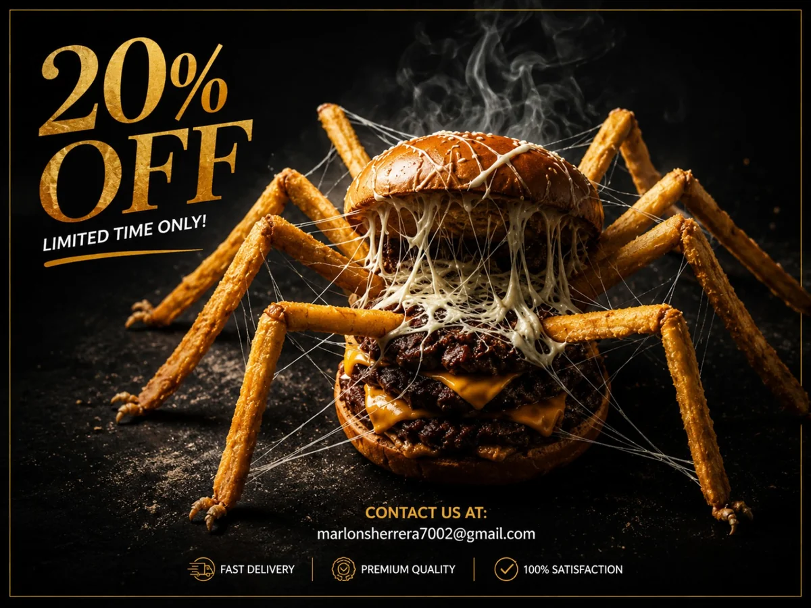
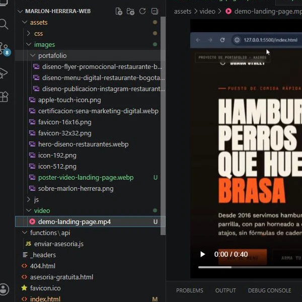

Un solo link para todo
En vez de mandar a tu cliente a buscar por separado tu Instagram, tu WhatsApp y tu menú, un solo link lo reúne todo en un lugar profesional.
Mi mejor servicio · Landing page interactiva
El servicio más completo y más accesible de todo mi catálogo: una landing page propia para tu negocio de comida rápida, programada con código real (no una plantilla), con botones interactivos a tus redes sociales y WhatsApp, hosting gratuito incluido y entrega lista para usar. Desde $70.000 COP.

Por qué una landing page es la mejor opción
Instagram y Facebook son gratis, pero no son tuyos: si la plataforma cae, cambia su algoritmo o te bloquean la cuenta, pierdes todo. Una landing page es un espacio digital que te pertenece a ti, siempre disponible, con un solo link que reúne todo lo que tu cliente necesita saber de tu negocio de comida rápida.
En vez de mandar a tu cliente a buscar por separado tu Instagram, tu WhatsApp y tu menú, un solo link lo reúne todo en un lugar profesional.
No depende de que Instagram esté funcionando o de que tu perfil no se caiga. Tu landing page es tuya, aloja tu información siempre.
Un negocio con página propia transmite más seriedad que uno que solo existe en redes sociales, y eso genera más confianza para pedir a domicilio.
Lo puedes poner en tu WhatsApp Business, en tus redes, en un código QR en el local o impreso en tus volantes y empaques de domicilio.
Qué incluye
Un servicio completo de principio a fin, sin sorpresas ni costos ocultos:
Servicio adicional opcional
Te entrego tu landing page 100% funcional y lista para usar, tal como la pidas: eso es lo que incluye este servicio. Lo que decidas hacer con ella después —compartirla en tus redes, imprimirla en un código QR, o intentar que aparezca en buscadores como Google— queda en tus manos.
Si quieres ayuda con ese siguiente paso, puedo asesorarte por separado sobre qué hacer para que tu landing page empiece a ser rastreada por Google: desde configurar herramientas gratuitas de Google hasta recomendaciones generales de qué revisar. Es una asesoría adicional, aparte de la programación de la landing page, y podemos hablar del alcance por WhatsApp según lo que necesites.
La diferencia real
La mayoría de páginas económicas para negocios pequeños se hacen con constructores como Wix o Canva: plantillas que miles de negocios más también están usando, cargadas de código innecesario que no necesitas. Yo programo tu landing page línea por línea, con el mismo código con el que está hecho este sitio que estás viendo ahora mismo.
Sin el peso extra de un constructor genérico, tu página abre casi al instante, incluso con internet lento.
Pagas una vez por la programación y la entrega. No hay una suscripción mensual que te puedan subir después.
Es tu página, con tu marca. Sin el logo de la plataforma ni publicidad de terceros metida en tu sitio.
Como no parto de una plantilla, puedo acomodar el diseño, los colores y el orden de la información exactamente como tú lo quieras, no como el molde lo permita.
Véelo en acción
Un recorrido corto mostrando cómo queda una landing page terminada y cómo funcionan sus botones interactivos.

Detrás de cámaras
Cada landing page que entrego la escribo yo mismo en Visual Studio Code, con HTML, CSS y JavaScript reales — el mismo proceso con el que está hecho este sitio. No uso constructores de arrastrar y soltar, así que tengo control total sobre cómo se ve, cómo carga y cómo se comporta tu página en cualquier dispositivo.
Esa es la diferencia entre una página que se ve "hecha rápido" y una que se ve profesional desde el primer clic.
Cómo funciona
Nombre, descripción, redes sociales, WhatsApp y, si tienes, logo y fotos.
Escribo tu landing page a la medida, con la identidad y el estilo de tu negocio de comida rápida.
La publico en un espacio de alojamiento sin costo, para que quede funcionando y accesible por link.
Recibes el link de tu landing page funcionando, lista para compartir con tus clientes.
Precio
Puedo ofrecerlo así de económico porque el proceso es eficiente: programo la página yo mismo y la subo a un espacio de hosting gratuito, sin licencias ni plantillas de pago que trasladarte.
Página de una sola hoja, programada a la medida, con botones a tus redes sociales y WhatsApp, hosting gratuito incluido y entrega lista para usar.
Dudas frecuentes
Porque el proceso es eficiente para mí: programo la página con código propio, la subo a un espacio de hosting gratuito y te la entrego lista. No hay costos de plantillas ni de licencias que trasladarte, así que puedo ofrecerla al precio más accesible de todo mi catálogo.
No. El hosting gratuito que uso no tiene mensualidad. Pagas una sola vez por la programación y la entrega, y la página queda funcionando.
Una landing page programada con código propio carga más rápido, no depende de un constructor externo, no tiene marca de agua ni anuncios de la plataforma, y se puede personalizar 100% a tu gusto, sin las limitaciones de una plantilla genérica que también usan cientos de negocios más.
Sí, dentro de lo acordado en el plan. Cuéntame qué necesitas ajustar y te indico si aplica dentro del alcance inicial o como un ajuste adicional.
No. Te entrego la landing page funcional y lista para usar; qué hagas con ella después, incluyendo intentar que aparezca en buscadores, queda en tus manos. Si quieres ayuda con ese siguiente paso, ofrezco una asesoría adicional aparte de la programación de la landing page.
El nombre de tu negocio, una descripción corta de lo que ofreces, tus redes sociales y WhatsApp, y si tienes, tu logo y fotos. Con eso ya puedo empezar a programarla.
Tu negocio merece un lugar propio en internet
Escríbeme por WhatsApp, cuéntame de tu negocio de comida rápida y en pocos días tienes tu página propia lista para compartir.
Escribir por WhatsApp